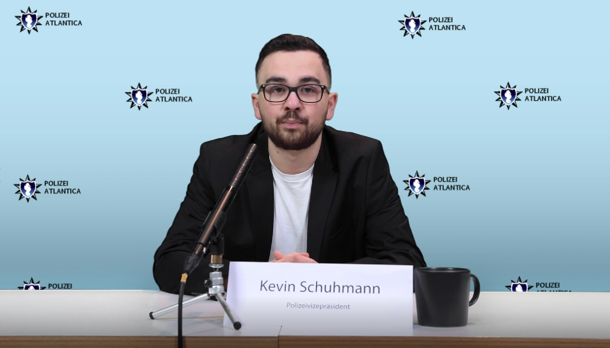

Technische Umsetzung



Technische Umsetzung:
Zur Ideenfindung, Sammlung von Themen, Erstellung des Moodboards, Formulierung erster Skriptentwürfen, dem Schreiben des Drehbuchs und der Planung des Drehtags haben wir Google Docs benutzt.
Zum Filmen nutzten wir eine Kamera, Stativ, Aufnahmegerät, Kopfhörer, Angel und Mikrofon von der Hochschule, ebenso wie den Greenscreen.
Die Tonaufnahmen des Off-Sprechers wurden im Tonstudio der Hochschule aufgenommen.
Der Schnitt wurde mit Premiere Pro von Adobe gemacht.
Die Bearbeitung des Videos und das Erstellen der Greenscreen-Hintergründe wurde mit Photoshop und Illustrator von Adobe erledigt.
Für das Animieren wurde After Effects von Adobe genutzt.
Das Erstellen der Micropage zur Präsentation wurde mit Visual Studio Code und GitHub gemacht.
Teilgenommene Schauspieler: Lukas Dirlmeier, Nina Distler, Gaia Galli, Jule Heinzmann, Zara, Kocak, Hannah Sättele und Edwin Skrijelj.